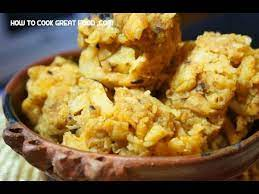

The following is a list of our Special Meals with their price:-
.| Name | price | Description | Image |
|---|---|---|---|
| Anchote | 650ETB | Anchote, indigenous to Ethiopia, is a drought-resistant tuber with unrealized potential despite its significant contributions to local history and food traditions. Farmers mainly grow the crop for its seeds and harvest it in four months. | |
| chachabsa | 400ETB | Cacabsa is a spiced bread dish that is eaten for breakfast in the Oromia region. It is made in a very large circular pan called an eelee and, before it is shredded into pieces and mixed with a spiced butter blend, it resembles a tortilla. |  |
| Chuko | 350ETB | Chuko, barley preserved with butter , is a traditional food of Oromia region in Ethiopia. It is traditionally made by women from barley powder mixed with a sufficient amount of distilled butter, along with ginger, onion, salt and spices. | |